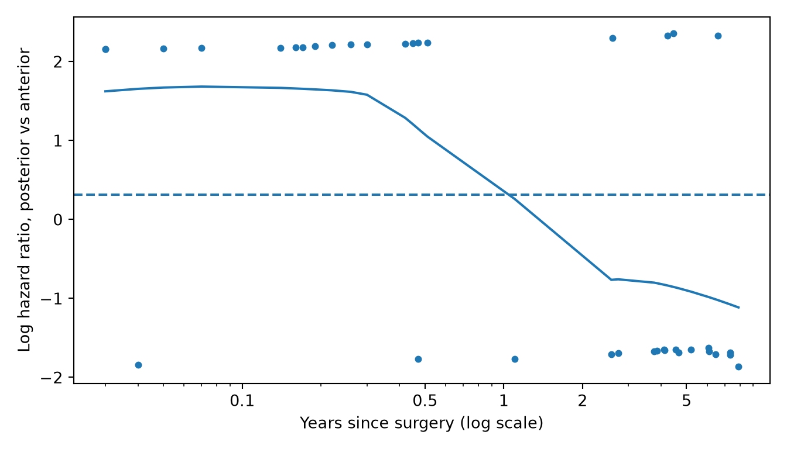

Hazard ratios, choosing covariates, univariable and multivariable Cox models, checking straight-line effects and proportional hazards, remedies, stratified Cox for matched sets and bilateral patients, Fine-Gray regression, and reporting.
Page 13 compared survival curves. Cox regression goes further: it gives each group or predictor a hazard ratio with a 95% CI, and it can adjust for several predictors at once. Pages 8, 11 and 12 each fitted a Cox model in a few steps. This page covers the whole job: - what a hazard ratio means - how to choose covariates - how to check the model’s assumptions, and what to do when one fails - how to handle matched sets and bilateral patients - how to model competing risks - how to report the result
Note💡 How this page works
Run the code blocks in order, from the top: later blocks use the packages, data and models made earlier.
Until the section on bilateral patients, the examples use every case as if it were a separate patient, including the 80 patients who had both sides operated on.
The hazard ratio
The hazard is the rate of revision at a given moment among the implants still in place: the chance that an unrevised implant is revised in the next short interval. It can rise or fall over time. The hazard ratio (HR) divides one group’s hazard by another’s. A Cox model assumes that this ratio stays the same over the whole follow-up, even if the hazards themselves change: the hazards are proportional.
Here is the Cox model for implant alone, with implant A as the reference:
library(tidyverse)library(survival)library(ggsurvfit)cohort <-read_csv("data/cohort.csv", show_col_types =FALSE) |>mutate(age_10 = age /10, # hazard ratios per 10 years of agebmi_5 = bmi /5) # and per 5 kg/m² of BMIimplant_model <-coxph(Surv(followup_years, revised) ~ implant, data = cohort)summary(implant_model)
Call:
coxph(formula = Surv(followup_years, revised) ~ implant, data = cohort)
n= 600, number of events= 81
coef exp(coef) se(coef) z Pr(>|z|)
implantB -0.2020 0.8171 0.3092 -0.653 0.514
implantC 1.1208 3.0673 0.2579 4.345 1.39e-05 ***
---
Signif. codes: 0 '***' 0.001 '**' 0.01 '*' 0.05 '.' 0.1 ' ' 1
exp(coef) exp(-coef) lower .95 upper .95
implantB 0.8171 1.224 0.4458 1.498
implantC 3.0673 0.326 1.8502 5.085
Concordance= 0.659 (se = 0.03 )
Likelihood ratio test= 27.64 on 2 df, p=1e-06
Wald test = 29.63 on 2 df, p=4e-07
Score (logrank) test = 33.48 on 2 df, p=5e-08
import numpy as npimport pandas as pdimport matplotlib.pyplot as pltfrom lifelines import CoxPHFitter, KaplanMeierFittercohort = pd.read_csv("data/cohort.csv")cohort["age_10"] = cohort["age"] /10# hazard ratios per 10 years of agecohort["bmi_5"] = cohort["bmi"] /5# and per 5 kg/m² of BMIimplant_model = CoxPHFitter().fit( cohort[["followup_years", "revised", "implant"]], duration_col="followup_years", event_col="revised", formula="implant", fit_options={"precision": 1e-12}, # stop only when fully converged; see the R vs Python box)print(implant_model.summary[["coef", "exp(coef)", "se(coef)", "exp(coef) lower 95%","exp(coef) upper 95%", "z", "p"]].round(3).to_string()) # to_string(): show every column
print(implant_model.log_likelihood_ratio_test().test_statistic) # overall likelihood ratio test
27.63546691821921
Reading the output, line by line: - n = 600, number of events = 81: the procedures and the revisions. The revisions, not the procedures, set how much a Cox model can learn. - coef: the log hazard ratio. Nobody reports it; it’s what the model estimates. - exp(coef): the hazard ratio. Implant C: 3.07. At any moment during follow-up, an unrevised implant C was revised at about three times the rate of an unrevised implant A. Implant B: 0.82. - se(coef), z, Pr(>|z|): the standard error of the coefficient, and the Wald test of whether the hazard ratio differs from 1 (p < 0.001 for C, p = 0.514 for B). - lower .95 / upper .95: the 95% CI of each hazard ratio: 1.85 to 5.09 for C, 0.45 to 1.50 for B. - Concordance = 0.659: how often, in pairs of patients, the one revised sooner had the higher predicted risk. 0.5 is a coin toss and 1 is perfect. - Likelihood ratio, Wald and score tests: three versions of the overall test that implant matters at all. With enough events they agree; the likelihood ratio test (27.6 on 2 df, p < 0.001) is the most reliable. Python prints the concordance and then this test under the table.
Tip🔀 R vs Python: convergence and the printout
Both programs handle tied revision times with Efron’s method and use the first group alphabetically (A) as the reference. lifelines’ default rule for when to stop iterating stops slightly early, so its hazard ratios can differ from R’s in the fifth or sixth digit. Every Python model on this page tightens it with fit_options={"precision": 1e-12}. R’s summary() prints the concordance and three overall tests; lifelines keeps them in concordance_index_ and log_likelihood_ratio_test(). (lifelines’ print_summary() shows everything at once, including the time the model was fitted.)
Warning⚠️ Watch out: a hazard ratio isn’t a risk ratio
“Three times the hazard” doesn’t mean three times as many revisions by 5 years. By 5 years, 28.9% of implant C knees and hips had been revised (1 − Kaplan-Meier), against 10.1% of implant A: 2.85 times as many, not 3.07. The two ratios are close when revisions are rare and drift apart as they become common. Report the hazard ratio as a ratio of rates, and give the cumulative risks separately.
km_by_implant <-survfit(Surv(followup_years, revised) ~ implant, data = cohort)1-summary(km_by_implant, times =5)$surv # revised by 5 years: A, B, C
[1] 0.10143478 0.07591293 0.28862332
for implant, group in cohort.groupby("implant"): implant_km = KaplanMeierFitter().fit(group["followup_years"], group["revised"])print(implant, round(1- implant_km.survival_function_at_times(5).iloc[0], 3)) # revised by 5 years
A 0.101
B 0.076
C 0.289
Choosing covariates
A study comparing implants has one question: does implant C carry a higher revision risk than implant A? The other predictors in the model are there to make that comparison fair. These covariates are chosen before you look at the results, for a reason you can write down:
Adjust for confounders: factors that affect both which implant a patient gets and their risk of revision. Age, sex and BMI are the usual ones in arthroplasty: surgeons may choose implants differently for older, heavier or female patients, and these factors can change revision risk.
Don’t adjust for what the implant causes. A dislocation or a reoperation that follows the implant choice is part of the implant’s effect, not a reason for it. Adjusting for it hides the effect you’re trying to measure.
Don’t choose covariates from the data. Keeping only the predictors with p < 0.2 in univariable models, or letting a stepwise procedure pick them, makes p-values and CIs look more certain than they are and gives different answers in every sample.
Events limit the model. A Cox model needs about 10 events per term, where a term is one coefficient: a two-level predictor like sex is one term, implant (B and C against A) is two, and a spline with 3 degrees of freedom is three. The practice cohort has 81 revisions, enough for about eight terms. Implant, age, sex and BMI use five, about 16 events per term. With fewer events, adjust for fewer things, and say so.
From univariable to multivariable
A univariable (or unadjusted) model has one predictor, like the implant model above. A multivariable (or adjusted) model has several; each hazard ratio is then that predictor’s effect with the others held fixed.
Implant C’s hazard ratio moved from 3.07 unadjusted to 3.19 adjusted (95% CI 1.92 to 5.29). Age, sex and BMI don’t explain the difference between the implants. When an adjusted estimate moves a lot, the covariates were probably confounding the unadjusted one; say so in the Discussion. Small moves mean little: a hazard ratio shifts a bit whenever a strong predictor is added, even without confounding.
Warning⚠️ Watch out: the covariates’ own hazard ratios aren’t findings
The model also prints hazard ratios for age, sex and BMI. Men’s hazard of revision was about half of women’s (0.51, 95% CI 0.32 to 0.81). It’s tempting to report that as a second result, but the model wasn’t built to answer it: nobody chose covariates that would make the comparison of men and women fair. Report the covariates’ estimates in the table, and describe any you discuss as exploratory, as page 12 does.
Is the effect a straight line?
A measured predictor like age enters the model as a straight line: each extra 10 years multiplies the hazard by the same amount, whether from 50 to 60 or from 75 to 85. To check, let the effect bend with a natural cubic spline (page 12 explains splines) and compare the two models with a likelihood ratio test:
library(splines)age_spline_model <-coxph(Surv(followup_years, revised) ~ implant +ns(age, df =3) + sex + bmi_5,data = cohort)anova(adjusted_model, age_spline_model) # likelihood ratio test: does the bend help?
Analysis of Deviance Table
Cox model: response is Surv(followup_years, revised)
Model 1: ~ implant + age_10 + sex + bmi_5
Model 2: ~ implant + ns(age, df = 3) + sex + bmi_5
loglik Chisq Df Pr(>|Chi|)
1 -461.26
2 -461.11 0.2935 2 0.8635
The spline didn’t clearly improve the fit (χ² = 0.29, df = 2, p = 0.864), so the straight line for age stands. Report the check in the Methods. (Exercise 2 checks BMI.)
Checking proportional hazards
The Cox model assumes each hazard ratio stays the same over the whole follow-up. The standard check uses Schoenfeld residuals. At each revision, the model compares the revised patient’s predictors with those of everyone still at risk. Rescaled and added to the model’s coefficient, each residual estimates the log hazard ratio at that moment. If the hazard ratio is constant, these estimates scatter around a flat line; if they drift with time, the assumption fails.
No predictor’s hazard ratio clearly changed over time (global test p = 0.359; BMI had the smallest p-value, 0.106). That’s no clear evidence against proportional hazards, which isn’t the same as proof that they hold: with 81 revisions, the test can miss a modest change.
Now a real violation. The practice data have one built in: in total hips, the posterior approach has a much higher revision rate in the first months after surgery (early dislocation), and no higher rate after that. Page 13 showed the curves crossing.
chisq df p
approach 11.3 1 0.00078
GLOBAL 11.3 1 0.00078
plot(approach_zph, resid =TRUE, se =TRUE) # the log hazard ratio over timeabline(h =coef(approach_model), lty =2) # the single hazard ratio the model assumes
test_statistic p
approach[T.posterior] 11.183262 0.000825
# scaled Schoenfeld residuals, one per revision; adding the coefficient gives the log hazard ratio over timeresiduals = approach_model.compute_residuals(tha_data, kind="scaled_schoenfeld")log_hr = residuals["approach[T.posterior]"] + approach_model.params_["approach[T.posterior]"]years = tha_data.loc[log_hr.index, "followup_years"]fig, ax = plt.subplots(figsize=(7, 4))ax.scatter(years, log_hr, s=12)trend = lowess(log_hr, np.log(years), frac=2/3, it=0) # smooth trend; it=0 keeps every point's full weightax.plot(np.exp(trend[:, 0]), trend[:, 1])ax.axhline(approach_model.params_["approach[T.posterior]"], linestyle="--") # the single hazard ratio the model assumesax.set_xscale("log") # spreads out the early revisionsax.set_xticks([0.1, 0.5, 1, 2, 5], labels=["0.1", "0.5", "1", "2", "5"])ax.set_xlabel("Years since surgery (log scale)")ax.set_ylabel("Log hazard ratio, posterior vs anterior")plt.tight_layout()plt.show()

The test: p < 0.001 (R’s χ² = 11.3 on 1 df). The posterior approach’s hazard ratio isn’t constant.
The points: one per revision. Points near +2 are posterior hips and points near −2 are anterior hips, so early on almost every point sits high.
The solid line smooths the points into an estimate of the log hazard ratio at each time. It starts high in the first months, when posterior hips were revised far more often, then falls below the dashed line, which marks the model’s single hazard ratio of 1.37 (log hazard ratio 0.31).
That single hazard ratio (1.37, 95% CI 0.72 to 2.61) mixes a large early effect with the years after, when there’s no clear difference. It describes no actual moment of follow-up, so don’t report it.
Warning⚠️ Watch out: test and look
With many events, the test flags changes too small to matter; with few, it misses real ones. Always look at the plot too. And report a non-significant test as “no clear evidence that the hazard ratios changed over time”, never as proof that the assumption holds.
Tip🔀 R vs Python: two versions of the test
R’s cox.zph() (survival 3.0 and later) computes the full score test, one per predictor, with implant’s two terms tested together. lifelines’ proportional_hazard_test() uses Grambsch and Therneau’s simpler original approximation and tests every column separately (implant B and implant C each get their own line). The statistics differ slightly (11.3 in R, 11.2 in Python for the approach) and lead to the same conclusions here. lifelines’ scaled Schoenfeld residuals leave out the coefficient that R adds, so the Python code adds it back. R’s plot spaces the revisions evenly along the time axis (its “km” scale); the Python plot uses a log scale for the same reason: to keep the many early revisions from piling up at zero.
When hazards aren’t proportional
There are two common fixes. Which one fits depends on whether you need the hazard ratio of the predictor that breaks the assumption.
1. Stratify, when it’s only an adjustment. Suppose the question is implant, in total hips, and approach is just a covariate. A Cox model stratified by approach gives each approach its own baseline hazard, of any shape, and estimates the implant hazard ratios within approaches. Approach gets no hazard ratio of its own, so its non-proportional effect no longer matters.
In total hips, with approach as a stratum, implant C’s hazard ratio was 2.11 (95% CI 1.02 to 4.40) against implant A.
2. Split the follow-up, when you need the effect. If the approach is the question, give it one hazard ratio for the first 6 months and another for the time after. Each patient followed beyond 6 months gets two rows, one per period; the model then estimates the approach’s effect separately in each:
# one row per patient per period: (0, 0.5] years and (0.5, end of follow-up]tha_split <-survSplit(Surv(followup_years, revised) ~ ., data = tha, cut =0.5, episode ="period") |>mutate(posterior_early =as.numeric(approach =="posterior"& period ==1),posterior_late =as.numeric(approach =="posterior"& period ==2))split_model <-coxph(Surv(tstart, followup_years, revised) ~ posterior_early + posterior_late,data = tha_split)summary(split_model)$conf.int
In the first 6 months, the hazard of revision was 8.47 times higher after the posterior approach (95% CI 1.93 to 37.3). After 6 months the estimate was 0.43 (95% CI 0.16 to 1.16), which is imprecise. The CI for the early effect is wide because it rests on 16 early revisions.
Choose the cut point before you look, from clinical reasoning: here, the period of highest dislocation risk after hip replacement. Trying several cut points until one gives a striking result is data dredging. R can also let a hazard ratio change smoothly with time (the tt() argument of coxph()), which avoids choosing a cut point.
Methods: Proportional hazards were checked with scaled Schoenfeld residuals. Because the effect of surgical approach changed over time, its hazard ratio was estimated separately for the first 6 months after surgery and thereafter.
Results: The hazard ratio for revision with the posterior approach compared with the anterior approach was 8.47 (95% CI 1.93 to 37.3) in the first 6 months and 0.43 (95% CI 0.16 to 1.16) after 6 months.
Stratified Cox: matched sets and bilateral patients
A Cox model assumes every row is an independent patient. Two common designs break that.
Matched sets. When each implant C patient is matched with similar patients who got other implants, the matched patients belong together. A Cox model stratified by matched set, strata(set_id), compares implants only within sets. The decision table calls this conditional proportional hazards regression. Page 7 works through matched pairs and page 9 matched sets of three.
Bilateral patients. 80 patients in the cohort had both sides replaced. Their two joints share the same patient’s bone, activity and surgeon, so their outcomes aren’t independent, and treating them as independent makes the CIs too narrow. There are three common choices:
Keep both joints and use robust standard errors clustered on patient. The hazard ratios don’t change; the CIs allow for the pairing. This is the usual choice.
Stratify by patient, strata(patient_id), to compare the two sides of each patient. Only patients whose two joints differ in the predictor, and who had a revision, contribute anything, so it’s rarely precise enough.
Keep one joint per patient, such as the first one operated on. Simple, but it throws away data.
exp(coef): unchanged: implant C’s hazard ratio is still 3.19.
se(coef) / robust se: R prints both; lifelines prints only the robust one when you cluster. Here they’re almost the same (0.259 and 0.258 for implant C), so the CI barely moves (1.92 to 5.28). Only 20 of the 80 bilateral patients had a revision, so the pairing matters little in this cohort. It can matter much more in yours: check, and say in the Methods what you did.
Tip🔀 R vs Python: robust standard errors
Both programs compute the same robust (“sandwich”) standard errors. When follow-up times are tied, R also applies Efron’s tie correction inside the robust variance and lifelines doesn’t, so the two differ in the fourth significant figure.
Competing risks regression: Fine-Gray (R only)
Every Cox model above treated death as censoring. That’s a cause-specific Cox model: its hazard ratios describe the revision rate among patients still alive, which is the right question for whether an implant performs worse. But as page 13 showed, deaths also stop revisions from ever happening. For “which patients will actually be revised?” use the Fine-Gray model, which models the cumulative incidence of revision directly. Its effect sizes are subdistribution hazard ratios (SHR).
Fine-Gray regression has no mature Python implementation, so this section is R only. tidycmprsk’s crr() takes the same three-level status as page 13’s cumulative incidence:
Compare it with the cause-specific model: - Implant C: SHR 3.09 (95% CI 1.86 to 5.14), close to the cause-specific HR of 3.19. Death rates didn’t clearly differ between implants (Gray’s test on page 13), so allowing for death changes little. - Age: SHR 1.07 per 10 years (95% CI 0.86 to 1.33), against a cause-specific HR of 1.22. Older patients may be revised at a somewhat higher rate while alive, but more of them die before they can be revised, so the subdistribution estimate is closer to 1: there’s no clear evidence that age changes how many patients are actually revised.
Report the cause-specific model to compare implants, and the Fine-Gray model when the question is how many patients will be revised. Many papers report both, and say which is which.
crr() can’t allow for patients who had both sides replaced. If many of yours did, survival’s finegray() function prepares the data for a Fine-Gray model that coxph() can fit with cluster = patient_id.
Warning⚠️ Watch out: a subdistribution hazard ratio isn’t a hazard ratio
The SHR has no simple meaning as a rate: patients who have died stay in its “at risk” group. Read it only as “higher or lower cumulative incidence”, and call it a subdistribution hazard ratio in the text and tables.
Reporting a Cox model
Most papers present Cox models as a table: one row per predictor, with the univariable and the multivariable hazard ratios side by side. Both columns use robust standard errors clustered on patient (above), so their CIs allow for the bilateral patients.
Abbreviations: CI = Confidence Interval, HR = Hazard Ratio
def hr_with_ci(model):"""Each term's hazard ratio and 95% CI as text, like '3.19 (1.92 to 5.29)'.""" rows = model.summaryreturn (rows["exp(coef)"].map("{:.2f}".format) +" ("+ rows["exp(coef) lower 95%"].map("{:.2f}".format)+" to "+ rows["exp(coef) upper 95%"].map("{:.2f}".format) +")")univariable = []for term in ["implant", "age_10", "sex", "bmi_5"]: one_predictor = CoxPHFitter().fit(cohort[["followup_years", "revised", term, "patient_id"]], duration_col="followup_years", event_col="revised", formula=term, cluster_col="patient_id", # robust SEs, clustered on patient fit_options={"precision": 1e-12}) univariable.append(hr_with_ci(one_predictor))hr_table = pd.DataFrame({"Univariable HR (95% CI)": pd.concat(univariable),"Multivariable HR (95% CI)": hr_with_ci(clustered_model)}) # robust SEs, for the bilateral patientsprint(hr_table)
Univariable HR (95% CI) Multivariable HR (95% CI)
covariate
implant[T.B] 0.82 (0.45 to 1.49) 0.83 (0.45 to 1.52)
implant[T.C] 3.07 (1.87 to 5.04) 3.19 (1.92 to 5.28)
age_10 1.25 (0.98 to 1.58) 1.22 (0.96 to 1.56)
sex[T.Male] 0.54 (0.34 to 0.86) 0.51 (0.32 to 0.81)
bmi_5 1.05 (0.87 to 1.28) 1.03 (0.84 to 1.27)
Methods: The association between implant and revision for any reason was estimated with Cox proportional hazards regression, with time from surgery as the time scale and implant A as the reference. Age, sex and body mass index were chosen in advance as covariates. Age entered the model as a linear term after a natural cubic spline showed no clear evidence of non-linearity. Proportional hazards were checked with scaled Schoenfeld residuals. In the Cox models, robust standard errors clustered on patient accounted for patients who had both sides replaced. A Fine-Gray model, treating death as a competing risk, was fitted as a sensitivity analysis.
Results: During follow-up, 81 of 600 procedures (13.5%) were revised. After adjustment for age, sex and body mass index, the hazard ratio for revision compared with implant A was 3.19 (95% CI 1.92 to 5.28) for implant C and 0.83 (95% CI 0.45 to 1.52) for implant B (test of proportional hazards, global p = 0.359). With death treated as a competing risk, the subdistribution hazard ratio for implant C was 3.09 (95% CI 1.86 to 5.14).
Before you submit, check that the paper states: - the number of patients, procedures and events - time zero and the event definition (page 13) - which covariates were adjusted for, and why - how continuous predictors were modeled, and how proportional hazards were checked - how bilateral patients and deaths were handled
Exercises
The solutions use the packages, data and models made in the sections above, so run the page from the top first.
1. Fit a univariable Cox model for ASA class (as a number, 1 to 4) and write the Results sentence.
Results: Comparing a natural cubic spline for BMI with a straight line gave a likelihood ratio χ² of 2.64 (df = 2, p = 0.267).
There’s no clear evidence that BMI’s effect bends, so the straight line stands.
3. Total hips and total knees may have different baseline revision rates. Refit the adjusted model stratified by procedure. Does implant C’s hazard ratio change? Write the Results sentence.
Results: In a Cox model stratified by procedure and adjusted for age, sex and BMI, the hazard ratio for revision with implant C compared with implant A was 3.16 (95% CI 1.90 to 5.24); without stratification it was 3.19.